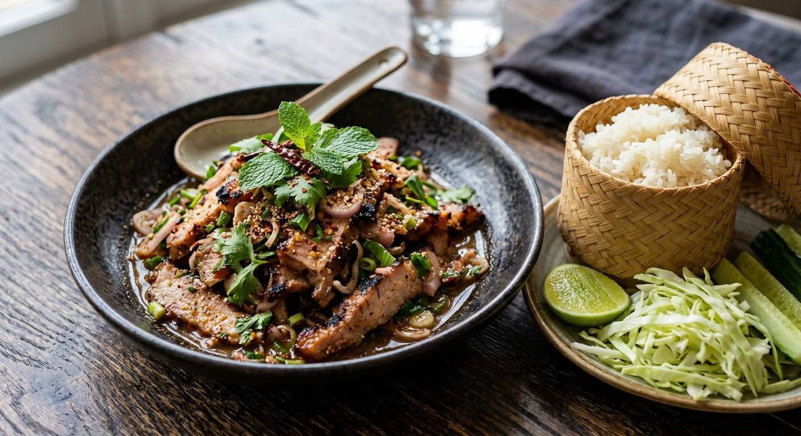

น้ำตก means "waterfall" — the juices that drip when the grilled meat comes off the fire. Pork neck sliced warm, dressed in its own drippings with lime, fish sauce, toasted rice and mint.

The Isaan kitchen's name for it is poetic and exact: น้ำตก — waterfall. When the grilled meat is lifted off the fire and sliced, the juices run — and those drippings, mixed with the lime and fish sauce, are the dressing. That's the whole dish in one image: a salad whose sauce is the meat's own.
Nam tok is the grilled sibling of laab. Laab is poached or stir-fried and minced; nam tok is grilled and sliced, with the fire's smoke in the dressing. Everything else is family: toasted rice powder (ข้าวคั่ว) for the nutty depth, ground dried chillies for the heat, shallots, spring onion, sawtooth coriander and mint. It is eaten with sticky rice and raw cabbage, and it is not supposed to be polite.
The classic cut is สันคอหมู — pork neck, marbled enough to stay juicy over fire, and Thai cooks often marinate it first — evaporated milk, white soy, oyster sauce and coriander root, the same marinade family as moo ping. The beef version (น้ำตกเนื้อ) is the same dish with a beefier argument.
| Thai | English | Amount |
|---|---|---|
| สันคอหมูย่าง | Pork neck, grilled and sliced | 300–400 g |
| น้ำซุป | Stock — the pan method's addition, see notes | ¼ cup |
| ข้าวคั่ว | Toasted rice powder | ½ tbsp |
| พริกป่น | Ground dried chillies | to taste |
| น้ำมะนาว | Lime juice | 1 tbsp |
| น้ำปลา | Fish sauce | 1 tbsp |
| หอมแดง (ซอย) | Shallots, sliced | 1 tbsp |
| ต้นหอม · ผักชี (ซอย) | Spring onion and coriander, sliced | as liked |
| ผักชีฝรั่ง (ซอย) | Sawtooth coriander, sliced | as liked |
| ใบสะระแหน่ | Mint leaves | a handful |
| กะหล่ำปลี · แตงกวา | Cabbage and cucumber, to serve | as liked |
| ข้าวเหนียว | Sticky rice, to serve | as liked |
| The grilled collar (คอหมูย่าง — ครัวบ้านพิม): pork collar · evaporated milk · white soy · oyster sauce · pepper · sugar · salt · coriander roots | ||
Fire or pan. The classic grills the meat and dresses it in the drippings alone; Kapook's published version skips the fire entirely and warms sliced pork through stock in a pan. Faster, but the smoke is the point.
Pork or beef. น้ำตกหมู (pork, usually neck) and น้ำตกเนื้อ (beef) are the same dish on different animals. Beef versions often carry a little more chilli.
The herbs. Mint is non-negotiable; sawtooth coriander (ผักชีฝรั่ง) is in most but not all; some recipes reach for Vietnamese coriander. The mint at minimum.
Marinade or not. Purists grill the neck bare and let the fire do the talking; the evaporated-milk-and-soy marinade (ครัวบ้านพิม's) makes it juicier and a touch sweeter.
What it's eaten with. Sticky rice and raw cabbage are the standard; cucumber appears in some households. Nobody argues with the sticky rice.
This recipe is translated from the following Thai-language sources. Where they disagree, we've said so.
1. Kapook — "น้ำตกหมู อาหารไทย-อีสานสุดแซ่บ อร่อยครบรส" (full quantities and the stock-pan method) — cooking.kapook.com
2. Wongnai — "วิธีทำ น้ำตกหมู เมนูอาหารอีสาน แซ่บไม่รู้ลืม!" (the classic grilled version, full method) — wongnai.com
3. ครัวบ้านพิม — "น้ำตกหมู + คอหมูย่าง" (the grilled-collar marinade and the charcoal method) — pim.in.th